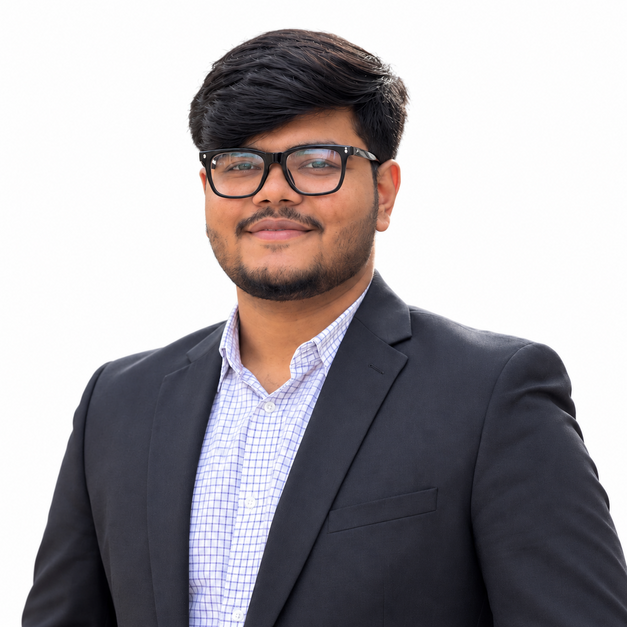
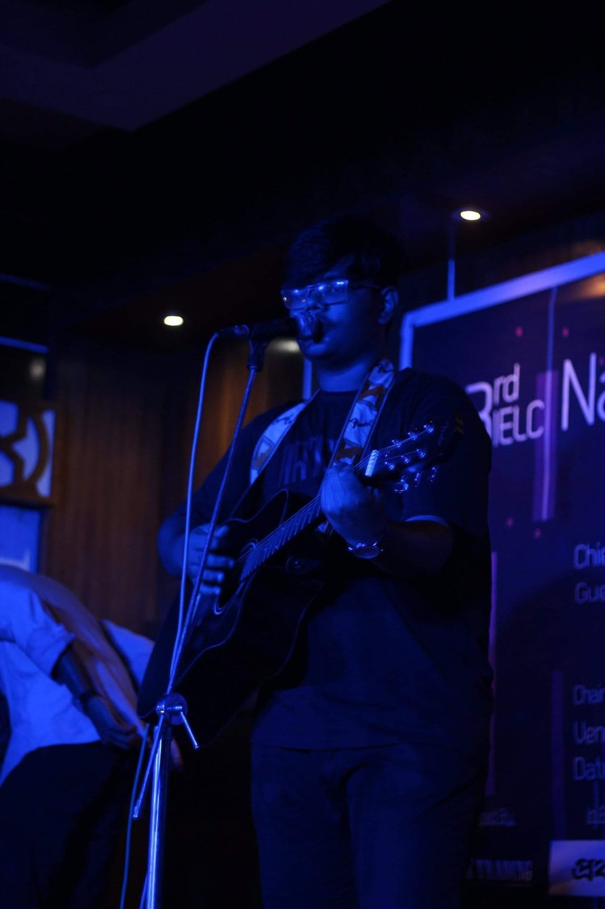

2009
Ideal School & College
Started a ten-year academic journey in the English Version. Cultural activities and club involvement later became an important part of school life.
Electrical & Electronic Engineering · Islamic University of Technology
Engineer by training, organizer by instinct, and curious by nature.
I work across embedded systems, signal processing, communications and technical research — while staying deeply involved in leadership, events, corporate engagement, sports, and creative pursuits.

A curated record of the technical work, people, responsibilities, experiences, and interests that have shaped my journey.
About me
I am an Electrical and Electronic Engineering graduate from the Islamic University of Technology, driven by curiosity, a strong sense of responsibility, and an interest in exploring beyond a single discipline.
During my undergraduate years, I particularly enjoyed embedded systems, microcontrollers, Arduino-based work, MATLAB, and communication systems. My undergraduate research on handover optimization for LEO non-terrestrial networks strengthened my interest in analytical and research-oriented engineering problems.
At the same time, I never wanted university life to be defined by academics alone. I pursued leadership, organizational work, business competitions, corporate engagement, sports, music, entrepreneurship, and large-scale campus events. Those experiences taught me how to work with people, stay composed under pressure, and carry responsibility from planning through execution.
At this stage, I am interested in entering a multinational or corporate environment where I can continue learning and combine my technical background with the leadership and management capabilities I have developed. I also remain open to postgraduate study abroad later in my career.
Journey
Started a ten-year academic journey in the English Version. Cultural activities and club involvement later became an important part of school life.
Completed SSC in Science with GPA 5.00 and received the SSC Examination 2019 Merit Scholarship (General Category).
Joined Notre Dame College in July 2019. The experience strengthened discipline, confidence, leadership, and social growth.
Completed HSC in Science in December 2021 with GPA 5.00.
Moved to residential university life in Gazipur and began a B.Sc. in Electrical and Electronic Engineering — alongside a much broader journey through projects, leadership, competitions, events, and sport.
Served as Grameenphone Campus Lead, advanced into senior student leadership roles, and completed industrial and technical training across manufacturing, power, research, and telecom environments.
Completed the undergraduate journey in September 2026, carrying forward a portfolio that combines technical depth with leadership, operations, people, and creative interests.
Academics
English Version · Science
Ten years of foundational schooling with a strong academic base in Science and early exposure to cultural and extracurricular activities.
English Version · Science
A formative academic period that strengthened discipline, confidence, independence, and personal growth.
B.Sc. in Electrical and Electronic Engineering
Completed undergraduate study with project work across embedded systems, signal processing, communication networks, machine learning, electrical design, computer architecture, and CMOS/VLSI.
Projects & Research
Evaluated handover strategies for dense Low Earth Orbit non-terrestrial networks using real Starlink TLE data, Python, and Skyfield, with emphasis on the trade-off between connection stability and link quality.
Assembly-based motor control system with PWM speed control, direction control, keypad input, LCD monitoring, and safety logic in Proteus.
View project →Interactive MATLAB application for visualizing discrete and continuous convolution and correlation with step-by-step animation.
View project →CMOS NAND-based circuit designed in MicroWind and verified through extracted SPICE/PSpice simulation and waveform analysis.
View project →AutoCAD-based lighting, power distribution, conduit routing, switchboard connections, and distribution-board design.
View project →Proteus-based design of a 6-bit Simple-As-Possible computer architecture demonstrating CPU components, memory interfacing, and control logic.
View project →Experience
Served as the primary liaison between Grameenphone and the university, coordinating campus engagement initiatives and collaborating with multiple corporate teams. Organized a Grameenphone campus roadshow at IUT with 200+ participants while coordinating stakeholders, volunteers, and event operations.
Observed air-conditioner and refrigerator manufacturing lines, quality-control processes, and shop-floor workflow management in a large-scale production environment.
Observed power-generation processes, water-treatment systems, turbines, generators, plant-level equipment, and maintenance practices. The attachment included technical instruction followed by written and viva assessments.
View certificate →Completed multidisciplinary training with lectures and hands-on demonstrations spanning machine learning, AI, VLSI, topological insulators, spintronics, quantum electronics, microcontrollers, robotics, solar cells, fabrication, and electronic prototyping.
View certificate →Gained industry exposure to telecommunications infrastructure, network operations, and operational management within a major telecom organization.
Leadership & ECA
From school clubs to university societies and large-scale events, I learned most by taking responsibility, working with people, and solving practical problems under real deadlines.
Vice President · December 2025–October 2026
Progressed from General Member to Sub-Executive, Assistant Joint Secretary, and Vice President. Worked across major initiatives including Intern, CaseBites, NeoTalk, BizNation, and Career Expo.
Joint Secretary · November 2025–October 2026
Contributed to student-branch operations and events, including EEE Day 2025 and professional-development activities.
President of Cultural Affairs
Organized the 6th and 7th National Cultural Jubilation. Received Lifetime Membership in 2022 in recognition of contribution and leadership.
Sub-Executive
Contributed to the 2nd and 3rd National English Language Carnivals and hosted the 2nd NELC, alongside regular cultural involvement.
View certificate →Co-organized a large-scale open-air concert featuring 8 leading Bangladeshi bands and attracting 1,000+ attendees. Coordinated with 8+ sponsors and partners, contributing to approximately BDT 4–5 lakh in sponsorship and ticket revenue.
Co-founded a food startup with seven friends. Contributed primarily to marketing strategy and ideation while supporting operations and logistics. Helped grow its Facebook community to 700+ followers and operate stalls at two major international concerts at ICCB in 2024.
Played as a batsman in two inter-department tournaments, finishing runner-up in one. The team became an important source of discipline, team spirit, and close friendships.
Actively contributed to university life through Freshers, Farewell, OIC Day, excursions, and other campus initiatives — often supporting organization, coordination, and logistics.
Awards & Recognition
Awarded based on admission-test merit. Covered approximately 75% of the total undergraduate study cost, including tuition and residential expenses.
General Category scholarship awarded on the basis of SSC academic performance.
Awarded in recognition of academic achievement.
Awarded in recognition of sustained contribution and leadership within the club.
Skills
Tools I have used confidently across academic projects, laboratory work, simulation, analysis, and research.
Hands-on familiarity developed through embedded-system, electrical-design, and VLSI-related coursework and projects.
Used extensively for presentations, coordination, event planning, analysis, and professional communication.
Music & Creative Interests
Music has been part of my life from an early age. I began learning guitar around Class 8 and continue to play primarily for personal enjoyment. I sing, play guitar, and record covers of songs I connect with.
I have performed at school, college, the Islamic University of Technology, and other events, with my IUT performances being particularly meaningful to me.
Visit my YouTube channel ↗
Featured Gallery
A curated preview. Choose a category to explore the growing archive.
Contact
For professional opportunities, technical conversations, research, collaboration, or simply a good exchange of ideas.